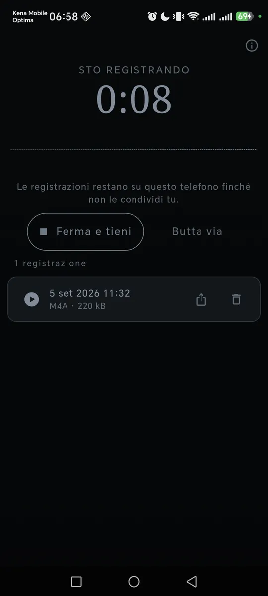
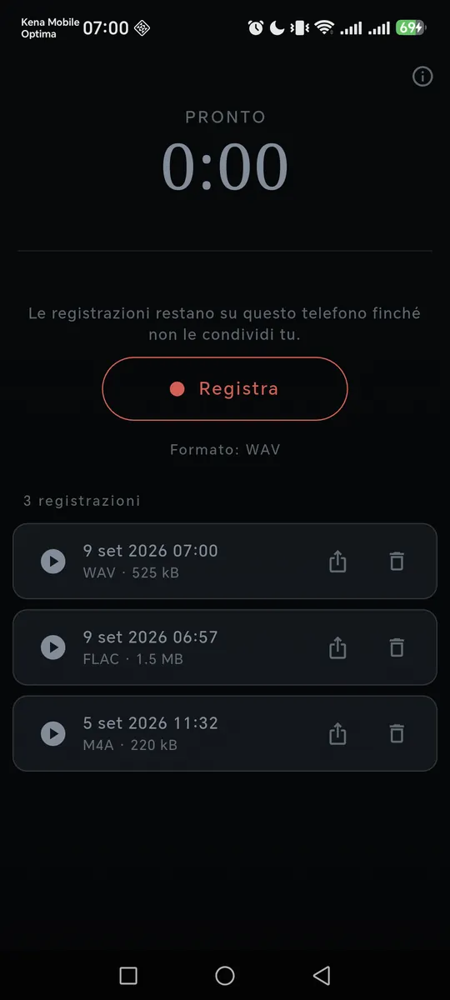
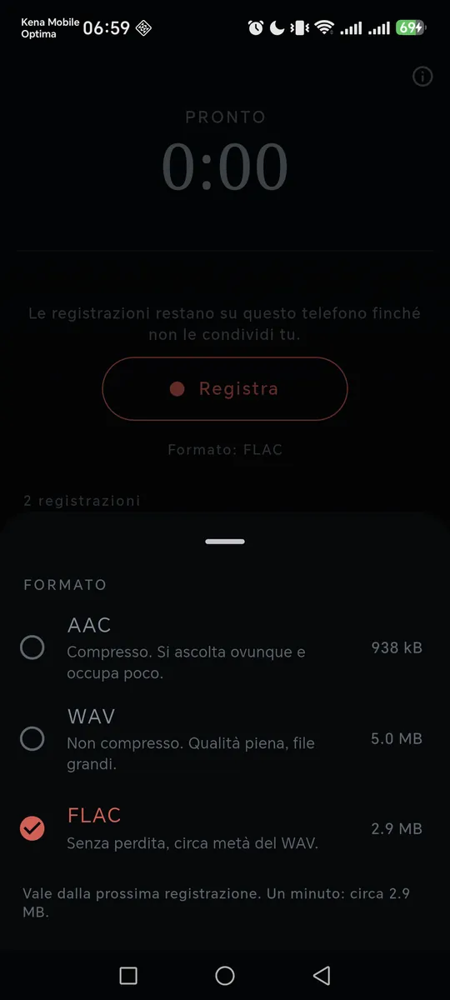
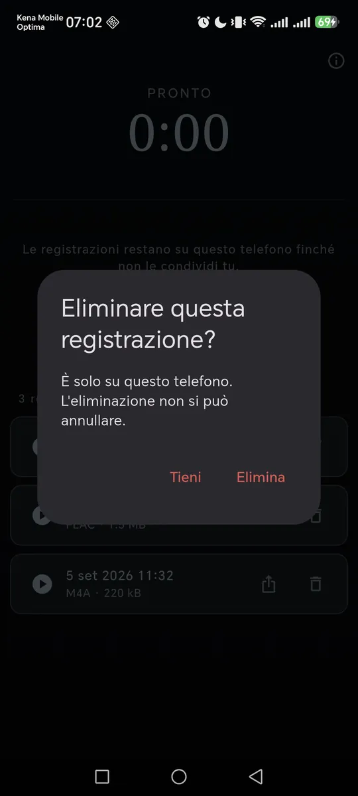

ItalianoEnglish
One button, a clock, and the waveform of what the microphone is hearing — the only honest sign that it really is recording. Press, talk, listen back.

The clock runs and the trace moves with the room. This room is empty, and it is right that you can tell. 
Newest first, with the format and the weight in plain sight. Listen back, share, delete. 
The format says what a minute costs, before you pick it. 
There is a question before deleting, because that copy is the only one there is.
What it does
- The list of recordings, newest first. Play back, share, delete — with a question before deleting, because that copy is the only one there is.
- A warning if the level is clipping, while there is still time to move the phone away. Afterwards it would be no use to anyone.
- It stops itself at two hours, keeping what it has: a recorder that can be left running by accident fills a phone.
- Quick start. The "Record" tile in quick settings, or a long press on the app icon: either one opens the app already recording.
- In English and Italian, following the phone's language.
If a call arrives, it stops and keeps
An incoming call takes the microphone, and there is no carrying on. Recorder closes the recording and saves it instead of losing it: throwing away what somebody was recording would be the worst thing this app could do.
Three formats, with the cost stated first
By default AAC in an .m4a file, which opens on
any phone and any computer without installing anything. If you need full
quality you can choose WAV (uncompressed) or
FLAC (lossless, about half the size of the WAV). The screen
says what a minute costs before you decide, which is when it
matters.
Your data stays yours
What you record ends up in this app's own folder, on this phone. Not in the gallery, not in a shared folder, not on a server of ours — we have none. No automatic upload, no transcription, no network service: if you want to send a recording to someone, you share it yourself with the system's own sheet. Two permissions — microphone and Internet for the ads; no storage permission.
How it is paid for
One banner anchored at the bottom, and that is all: no ads while you record, no subscription, no format held hostage.
Where to find it
Not on Google Play yet. The link will appear here when it is.